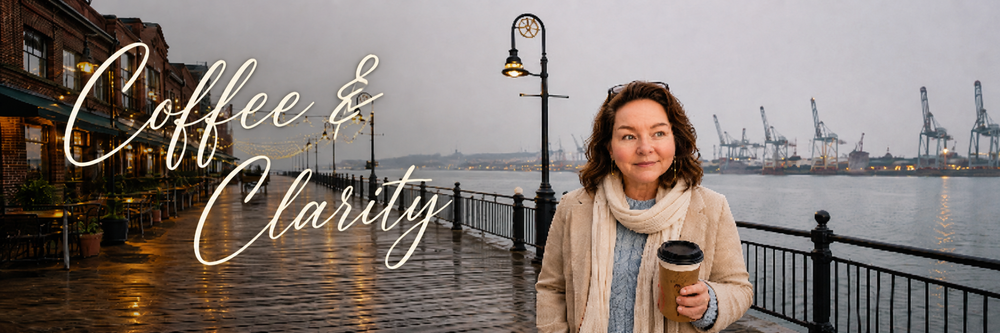

☕
Coffee & Clarity — Full Session
A spacious one-on-one conversation for reflection, intuitive guidance, practical encouragement, and clearer next steps.
Start a Conversation
Calm, grounded intuitive guidance
A warm, conversation-based session for reflection, reassurance, and clearer next steps.
Created by Sandra Melvin, CLC, Coffee & Clarity offers a calm space to pause, feel heard, and reconnect with your own inner direction — over coffee, by phone, or virtually.
The Experience
Coffee & Clarity is not therapy, but it is intended to feel therapeutic: unhurried, supportive, insightful, and deeply human.
Some of the most meaningful conversations happen when we feel comfortable, safe, and genuinely listened to. These sessions are designed for people navigating change, uncertainty, tender decisions, or simply needing a quiet moment to sort through what is on their heart and mind.
About the Session
Coffee & Clarity blends deep listening, intuitive insight, thoughtful reflection, and practical encouragement. It is designed to feel safe, welcoming, and grounded, offering you a gentle space to pause and leave with a greater sense of direction.
Sessions are available in relaxed local settings such as coffee shops and cafés, with phone or virtual options available if preferred.
Services
Simple, focused session options for meaningful support and clearer next steps.
A spacious one-on-one conversation for reflection, intuitive guidance, practical encouragement, and clearer next steps.
Start a ConversationA shorter session for one main question, decision, or area where you want gentle insight and direction.
Start a ConversationSchedule
Choose a time that feels calm and easy. You can book a 30-minute focused session or a full 60-minute Coffee & Clarity session.